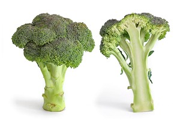

Broccoli was grown in the Roman Empire, and was likely improved via artifical selection in Italy. Broccoli spread to northern Europe in the 18th century and brought to North America in the 19th century. Some of the cultivars that have been most popular are the Premium Crop, Packman and Marathon
Per 100 g
1Source: Wikipedia (Broccoli). Content can be edited by the general public